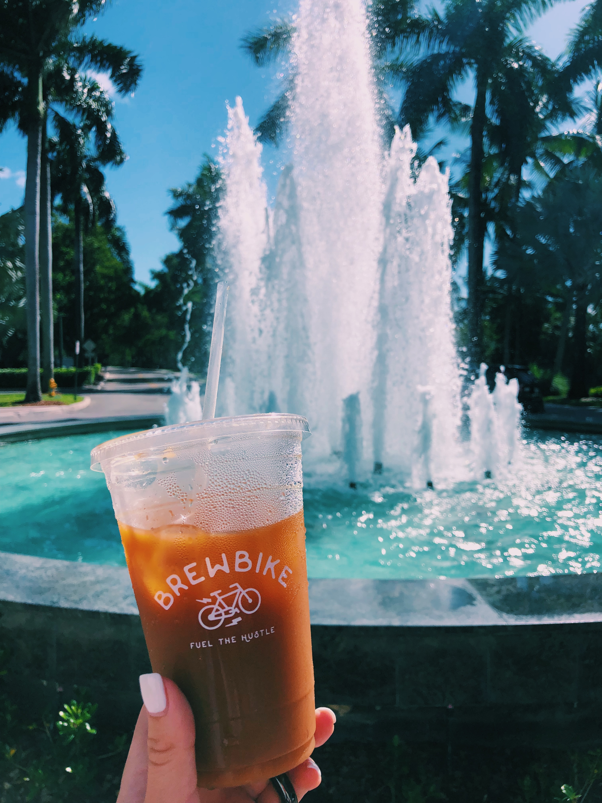

MIAMI
Dr. Smood. (The Healthiest Cafe) - Always organic, nutrient-rich, products. With locations in Miami and NY, this cafe strives to be the healthiest option for consumers. Seen above, "Organic Cold Brew" with homemade cashew milk. This delicious coffee is held up in front of their tea wall.
Brew Bike. (Student-run coffee business @ UM) - A bike, serving up quality cold brew and iced tea. Being a fully student-run business, it feels good stopping by in between classes to support. Two cold brew flavors: "OG"... which stands for original. Or, "Cinnamon Brown Sugar". Add-ins include simple syrup, and your choice of almond or oat milk. As for the tea, that's oolong black. The best part? You can take a picture of it in front of your favorite spots on campus!
Pubbelly Sushi. (Japanese Cuisine) - I mean, I told you that they had a good happy hour. Served in this adorable glass is the "Teasy Bear": junmai sake, green tea, honey & ginger.
The Brass Tap. (Craft Beer Bar) - Let's talk about another happy hour. With a big list to choose from, Brass Tap has a beer for everyone. Or... if you can't make up your mind, order a flight for $12 and try 4. The servers label the board for you so you can choose where to start and end.
NY
Fig & Olive. (Refined Flavors of the Mediterranean) - With an abundance of locations in the US, Fig & Olive has a main focal point: olive oil. But, it is not in this drink (at least I hope not). The "Mediterranean Mule": new amsterdam vodka, fresh ginger, lime, fresh rosemary & ginger beer.
SERRA by Birreria. (Seasonal Rooftop Restaurant) - A beautiful rooftop with delicious cocktails. "Passeggiata Nel Bosco": house-infused hibiscus vodka, lavendar syrup, rasberries & lime juice.
Cha Cha Matcha. (All Things Matcha) - With locations in NYC and LA, this cafe specializes in utilizing the Japanese green tea powder in its products. So go ahead and get creative with their menu, or go for the classic "Matcha Latte" as seen above.
BOSTON
Tatte. (Bakery and Cafe) - Small artisan bakery that uses local ingredients. With many locations in Boston and a few in Washington DC, this cafe delivers a unique experience and delicious treats. Specially crafted, the "House Latte": honey-halva & cardamom, proves the creativity of this place.
NJ
Rook Coffee. (Coffee Shop) - With locations near and on the Jersey Shore, this coffee shop has taken over for its specialty coffee. With full-bodied cold brew and individually made hot coffee, you are guaranteed to get a cup that is great. The beans originate from all over the world, bringing different flavors to the establishment. A pick-up must on the way to the beach. My favorite... "Iced New Orleans" with oat milk and a little agave.